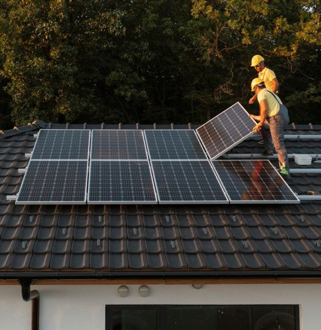

Energía fotovoltaica

Este tipo de energía solar funciona por medio de un sistema fotovoltaico.
Se trata de una instalación que produce electricidad utilizando módulos
fotovoltaicos, los cuales son capaces de transformar la radiación solar
directamente en energía eléctrica. Los paneles solares contienen células
fotovoltaicas que, al recibir la luz de forma directa, se ionizan y liberan
electrones que al interactuar entre sí generan corriente eléctrica.
La energía fotovoltaica ha recibido un impulso en los últimos años con la
llegada de las comunidades solares y el ahorro energético que suponen las
nuevas instalaciones de autoconsumo solar. Además, la llamada energía
agrovoltaica también está adquiriendo especial relevancia dentro del
sector agrícola.